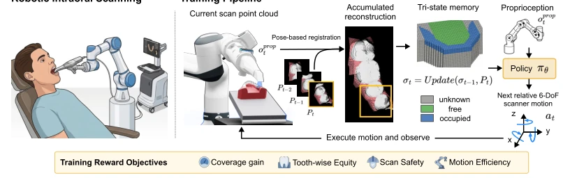
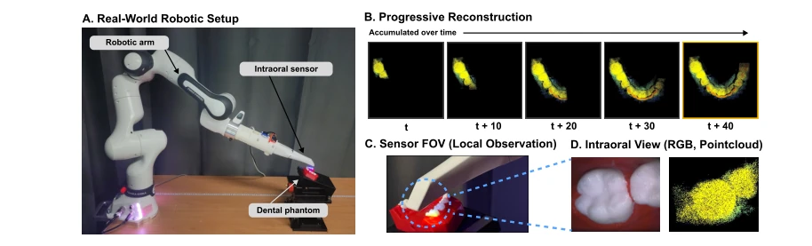

这篇论文号称是首个基于强化学习的机器人自动口内扫描管线，听起来挺唬人，毕竟牙科扫描向来是“手艺活”。作者用三态几何记忆解决了部分可观测问题，比单纯看当前帧聪明，能推理未扫描区域。但别急着吹，实验主要还是在牙模上跑的，真人口腔里的软组织干扰、患者运动这些“现实毒打”还没经历，局限性写得明明白白。不过零样本仿真到实物的迁移确实展示了潜力，至少机器人没把牙模当靶子打飞，Chamfer Distance 压到了 0.008 左右。算是 Embodied AI 在医疗场景的一次扎实落地，虽然还没进嘴，但离“机器牙医”又近了一步。
This paper claims to be the first reinforcement learning-based robotic automatic intraoral scanning pipeline, which sounds quite impressive, given that dental scanning has traditionally been a "craftsmanship task". The authors employ three-state geometric memory to address the partially observable problem, proving smarter than merely viewing the current frame and capable of inferring unscanned regions. However, do not rush to acclaim; the experiments were primarily conducted on dental models, and the "harsh realities" such as soft tissue interference in real human mouths and patient movement have not yet been encountered, with limitations clearly stated. Nevertheless, the zero-shot sim-to-real transfer indeed demonstrates potential; at least the robot did not knock the dental model away like a target, with the Chamfer Distance reduced to around 0.008. This counts as a solid implementation of Embodied AI in medical scenarios; although not yet inside the mouth, it is one step closer to the "machine dentist".
Intraoral scanning is a key entry point for digital dentistry, yet full arch and long-span scanning still rely on manual labor, characterized by high labor intensity and significant quality fluctuations [10]. Existing automation attempts are mostly based on fixed paths or classic Next-Best-View (NBV) methods [24, 35], which easily fail in narrow oral spaces, leading to uneven coverage or missed scanning. Medical image acquisition is shifting towards active control, but the dental field has not yet matured. A closed-loop control strategy capable of perceiving history and adapting to local constraints is needed to reduce human variability and improve the consistency of downstream workflows. Existing methods struggle to balance global coverage with fairness for individual teeth and rely too heavily on operator experience, urgently requiring the introduction of learning-based active scanning strategies to cope with restricted workspaces.
Overall, it is a PPO reinforcement learning closed-loop. The observation space includes accumulated three-state voxel memory (unknown/free/occupied) and robot proprioception. The action is relative 6-DoF displacement. The core innovations lie in: 1. Geometric memory space, where voxelized accumulation of point clouds allows the policy to infer unobserved regions, distinguish between free and unknown spaces, with boundaries implicitly implying exploration frontiers; 2. Tooth-level coverage learning, where the reward function considers not only global coverage but also tooth-wise equity, safety distance, and motion efficiency, combined with progressive curriculum training to avoid training instability caused by sparse rewards. Specific reward terms include coverage completion, focus on uncovered teeth, frontier exploration, region completion, leave penalty, and side coverage reward, ensuring scanning is both fast and complete. The network adopts a dual-branch architecture, where the voxel branch uses 3D convolution to encode memory, the proprioception branch uses MLP to encode state, and they are fused to output the policy. Training uses the PPO algorithm, updating parameters through advantage estimation to ensure policy feasibility within restricted workspaces.

Figure 1: System overview of RobOralScan. Local scan observations are accumulated into a tri-state geometric memory, which is provided to the policy together with robot proprioception. The policy outputs relative 6-DoF scanner motions for closed-loop scan control.
Simulation based on the Teeth3DS dataset, comparing anatomy-guided scanning and classic NBV baselines. Metrics include Chamfer Distance, mean coverage rate, lower-tail coverage rate, etc. RobOralScan achieved 92.58% mean coverage, outperforming the script method's 47.28%, with a lower-tail coverage of 88.45%. Ablation experiments prove that three-state memory is more effective than binary occupancy, and removing safety or equity rewards significantly reduces the success rate. Finally, zero-shot real-world validation was conducted on a Franka manipulator + intraoral scanner, demonstrating the policy's generalization ability. CD was 0.00838, with 8 out of 10 evaluations completing scan standards, demonstrating effective sim-to-real transfer.

Figure 2: Zero-shot real-world deployment of RobOralScan on a Franka Research 3 (FR3) arm equipped with a Huvitz Lilivis SCAN intraoral scanner. The policy produces stable scanner motions and progressively reconstructs tooth and adjacent-gum surfaces without real-world fine-tuning.